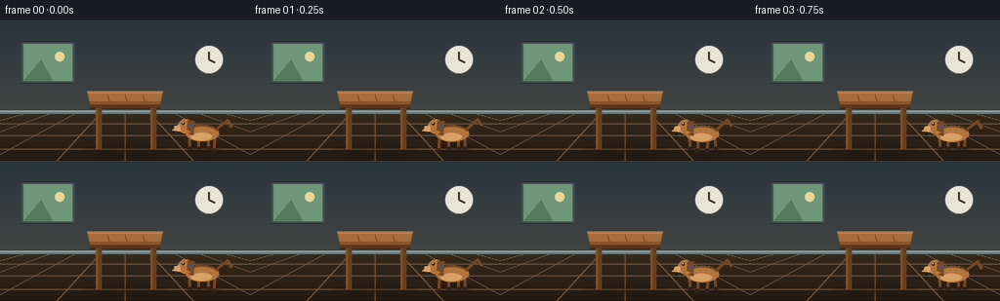
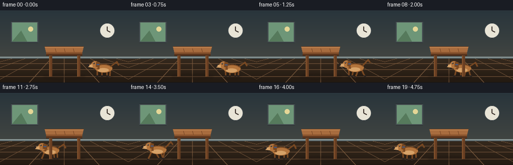

CODING AGENTS AS PIXEL WORLD MODELS
traex/Seed-2.1-Pro-0915 · dynamic_spatial_relationship_0002
点击播放 · 原生 RGB 像素
逐轮保存的候选
回放视频、检查图与代码变化。
每份候选均可单独播放。实际图片检查记录在下方工具轨迹中。
候选 01播放与检查图
点击播放 · 原生 RGB 像素


展开代码变化
--- 上一保存版本
+++ 本次保存版本
@@ -0,0 +1,225 @@
+"""Text-to-video: a dog is on the right of a table, then runs to its left.
+
+Renders 20 RGB frames (256x144, 4 fps) procedurally with PIL at 3x
+supersampling, then downsamples with LANCZOS for smooth edges.
+"""
+import math
+
+import numpy as np
+from PIL import Image, ImageDraw, ImageFilter
+
+import artifact_io
+
+W, H, N, FPS = 256, 144, 20, 4.0
+S = 3 # supersampling factor
+
+# Palette
+SKY_TOP = (122, 158, 178)
+SKY_BOT = (196, 206, 196)
+WALL_TRIM = (96, 110, 112)
+FLOOR_TOP = (158, 120, 84)
+FLOOR_BOT = (104, 76, 52)
+FLOOR_LINE = (120, 88, 60)
+TABLE_TOP = (138, 84, 46)
+TABLE_TOP_HI = (168, 108, 62)
+TABLE_LEG = (104, 62, 34)
+DOG_BODY = (178, 116, 60)
+DOG_DARK = (120, 72, 34)
+DOG_LIGHT = (214, 162, 104)
+DOG_NOSE = (44, 36, 32)
+SHADOW = (40, 28, 20)
+
+HORIZON = 96 # y of wall/floor boundary in base coords
+GROUND_Y = 132 # y where feet meet the floor
+
+
+def sc(v):
+ return int(round(v * S))
+
+
+def make_background():
+ """Static room rendered once at supersampled resolution."""
+ img = Image.new("RGB", (W * S, H * S))
+ d = ImageDraw.Draw(img)
+
+ # Vertical wall gradient
+ for y in range(HORIZON):
+ t = y / HORIZON
+ c = tuple(int(SKY_TOP[i] + (SKY_BOT[i] - SKY_TOP[i]) * t) for i in range(3))
+ d.line([(0, sc(y)), (W * S, sc(y))], fill=c)
+
+ # Floor gradient
+ fh = H - HORIZON
+ for y in range(HORIZON, H):
+ t = (y - HORIZON) / fh
+ c = tuple(int(FLOOR_TOP[i] + (FLOOR_BOT[i] - FLOOR_TOP[i]) * t) for i in range(3))
+ d.line([(0, sc(y)), (W * S, sc(y))], fill=c)
+
+ # Floor perspective planks
+ for k in range(-6, 13):
+ x_top = 128 + k * 26
+ d.line([(sc(x_top), sc(HORIZON)), (sc(128 + k * 70), sc(H))],
+ fill=FLOOR_LINE, width=sc(1))
+ for y in (106, 118, 132):
+ d.line([(0, sc(y)), (W * S, sc(y))], fill=FLOOR_LINE, width=sc(1))
+
+ # Baseboard
+ d.rectangle([0, sc(HORIZON - 4), W * S, sc(HORIZON)], fill=WALL_TRIM)
+ d.rectangle([0, sc(HORIZON - 4), W * S, sc(HORIZON - 2)], fill=(140, 152, 150))
+
+ # Framed picture on the back wall
+ px0, py0, px1, py1 = 24, 24, 74, 62
+ d.rectangle([sc(px0 - 2), sc(py0 - 2), sc(px1 + 2), sc(py1 + 2)], fill=(70, 78, 82))
+ d.rectangle([sc(px0), sc(py0), sc(px1), sc(py1)], fill=(110, 150, 120))
+ d.polygon([(sc(px0), sc(py1)), (sc(px0 + 18), sc(py0 + 16)),
+ (sc(px0 + 30), sc(py1))], fill=(86, 122, 92))
+ d.ellipse([sc(px0 + 32), sc(py0 + 8), sc(px0 + 42), sc(py0 + 18)],
+ fill=(228, 214, 150))
+
+ # Wall clock
+ cx, cy, r = 214, 40, 14
+ d.ellipse([sc(cx - r - 1), sc(cy - r - 1), sc(cx + r + 1), sc(cy + r + 1)],
+ fill=(70, 78, 82))
+ d.ellipse([sc(cx - r), sc(cy - r), sc(cx + r), sc(cy + r)], fill=(232, 228, 214))
+ d.line([(sc(cx), sc(cy)), (sc(cx), sc(cy - 8))], fill=(60, 50, 44), width=sc(2))
+ d.line([(sc(cx), sc(cy)), (sc(cx + 6), sc(cy + 3))], fill=(60, 50, 44), width=sc(2))
+ return img
+
+
+def draw_dog(base_img, cx, phase, moving, t):
+ """Draw dog facing left, centered at cx, feet near GROUND_Y."""
+ layer = Image.new("RGBA", (W * S, H * S), (0, 0, 0, 0))
+ d = ImageDraw.Draw(layer)
+
+ bounce = -abs(math.sin(phase)) * 2.2 if moving else math.sin(t * 2.0) * 0.6
+ cy = GROUND_Y - 17 + bounce
+
+ # Legs (behind body): four legs with a run/gallop cycle.
+ amp = 7 if moving else 1.2
+ hips = [(-13, -10), (-4, 6), (6, -6), (13, 10)] # x offset, phase offset
+ for hx, po in hips:
+ sw = math.sin(phase + po)
+ hip_x, hip_y = cx + hx, cy + 5
+ foot_x = hip_x + sw * amp
+ foot_y = GROUND_Y - 1 + (2 if sw < -0.6 else 0)
+ knee_x = (hip_x + foot_x) / 2
+ knee_y = hip_y + 8
+ d.line([(sc(hip_x), sc(hip_y)), (sc(knee_x), sc(knee_y))],
+ fill=DOG_DARK, width=sc(3))
+ d.line([(sc(knee_x), sc(knee_y)), (sc(foot_x), sc(foot_y))],
+ fill=DOG_DARK, width=sc(3))
+ d.ellipse([sc(foot_x - 2.5), sc(foot_y - 1.5),
+ sc(foot_x + 2.5), sc(foot_y + 1.5)], fill=DOG_NOSE)
+
+ # Tail
+ wag = math.sin(phase * 0.8 + 1.0) * (0.35 if moving else 0.15)
+ tx0, ty0 = cx + 15, cy - 4
+ tx1, ty1 = tx0 + 11, ty0 - 9 + wag * 8
+ tx2, ty2 = tx0 + 15, ty0 - 2 + wag * 12
+ d.line([(sc(tx0), sc(ty0)), (sc(tx1), sc(ty1)), (sc(tx2), sc(ty2))],
+ fill=DOG_DARK, width=sc(3), joint="curve")
+
+ # Body
+ d.ellipse([sc(cx - 17), sc(cy - 8), sc(cx + 17), sc(cy + 9)], fill=DOG_BODY)
+ d.ellipse([sc(cx - 12), sc(cy), sc(cx + 10), sc(cy + 8)], fill=DOG_LIGHT)
+ d.arc([sc(cx - 17), sc(cy - 8), sc(cx + 17), sc(cy + 9)], 200, 340,
+ fill=DOG_DARK, width=sc(2))
+
+ # Head at the front (left)
+ hx, hy = cx - 17, cy - 7
+ d.polygon([(sc(hx + 4), sc(hy + 4)), (sc(hx + 9), sc(hy + 8)),
+ (sc(hx + 7), sc(cy + 3)), (sc(hx + 2), sc(cy + 1))], fill=DOG_DARK)
+ d.ellipse([sc(hx - 8), sc(hy - 7), sc(hx + 8), sc(hy + 8)], fill=DOG_BODY)
+ # Snout pointing left
+ d.polygon([(sc(hx - 6), sc(hy - 1)), (sc(hx - 15), sc(hy + 1)),
+ (sc(hx - 14), sc(hy + 5)), (sc(hx - 5), sc(hy + 6))], fill=DOG_LIGHT)
+ d.ellipse([sc(hx - 17), sc(hy - 1), sc(hx - 12), sc(hy + 4)], fill=DOG_NOSE)
+ d.arc([sc(hx - 14), sc(hy + 2), sc(hx - 5), sc(hy + 9)], 10, 120,
+ fill=DOG_NOSE, width=sc(1))
+ # Floppy ear
+ ear_ang = math.sin(phase * 0.9) * (2.5 if moving else 0.5)
+ d.polygon([(sc(hx + 2), sc(hy - 6)), (sc(hx + 9), sc(hy - 5)),
+ (sc(hx + 8 + ear_ang), sc(hy + 7)), (sc(hx + 1), sc(hy + 4))],
+ fill=DOG_DARK)
+ # Eye with glint
+ d.ellipse([sc(hx - 4), sc(hy - 4), sc(hx - 1), sc(hy - 1)], fill=DOG_NOSE)
+ d.ellipse([sc(hx - 3.4), sc(hy - 3.6), sc(hx - 2.4), sc(hy - 2.6)],
+ fill=(245, 245, 240))
+ # Collar
+ d.arc([sc(hx - 2), sc(hy - 1), sc(hx + 12), sc(hy + 12)], 250, 300,
+ fill=(60, 90, 140), width=sc(2))
+
+ base_img.alpha_composite(layer)
+
+
+def draw_table(base_img):
+ """Table drawn after the dog so the dog runs in front of it."""
+ layer = Image.new("RGBA", (W * S, H * S), (0, 0, 0, 0))
+ d = ImageDraw.Draw(layer)
+ x0, x1 = 92, 164
+ top0, top1 = 72, 84
+
+ for lx in (x0 + 6, x1 - 10):
+ d.rectangle([sc(lx), sc(top1), sc(lx + 6), sc(GROUND_Y)], fill=TABLE_LEG)
+ d.rectangle([sc(lx), sc(top1), sc(lx + 2), sc(GROUND_Y)], fill=(128, 80, 44))
+ d.rectangle([sc(x0), sc(top1), sc(x1), sc(top1 + 6)], fill=(92, 54, 30))
+ d.polygon([(sc(x0 - 3), sc(top0)), (sc(x1 + 3), sc(top0)),
+ (sc(x1), sc(top1)), (sc(x0), sc(top1))], fill=TABLE_TOP_HI)
+ d.rectangle([sc(x0), sc(top1 - 1), sc(x1), sc(top1 + 2)], fill=TABLE_TOP)
+ d.line([(sc(x0 - 2), sc(top0 + 2)), (sc(x1 + 2), sc(top0 + 2))],
+ fill=(196, 138, 86), width=sc(1))
+ for gx in (110, 128, 146):
+ d.line([(sc(gx), sc(top0 + 4)), (sc(gx + 2), sc(top1 - 1))],
+ fill=(118, 70, 38), width=sc(1))
+ base_img.alpha_composite(layer)
+
+
+def smoothstep(t):
+ return t * t * (3 - 2 * t)
+
+
+def render_frame(fi, bg):
+ img = bg.copy().convert("RGBA")
+
+ # Hold on the right (frames 0-2), run across (3..16), hold left (17..19)
+ m0, m1 = 3, 16
+ x_right, x_left = 207, 49
+ if fi <= m0:
+ u = 0.0
+ elif fi >= m1:
+ u = 1.0
+ else:
+ u = smoothstep((fi - m0) / (m1 - m0))
+ cx = x_right + (x_left - x_right) * u
+ moving = m0 < fi < m1
+ phase = (fi - m0) * 1.9
+
+ # Table shadow
+ sh = Image.new("RGBA", (W * S, H * S), (0, 0, 0, 0))
+ ImageDraw.Draw(sh).ellipse(
+ [sc(86), sc(GROUND_Y - 4), sc(170), sc(GROUND_Y + 5)], fill=SHADOW + (80,))
+ img.alpha_composite(sh.filter(ImageFilter.GaussianBlur(sc(2))))
+
+ # Dog shadow
+ shadow_alpha = 55 if 80 < cx < 178 else 70
+ sh2 = Image.new("RGBA", (W * S, H * S), (0, 0, 0, 0))
+ ImageDraw.Draw(sh2).ellipse(
+ [sc(cx - 18), sc(GROUND_Y - 4), sc(cx + 18), sc(GROUND_Y + 4)],
+ fill=SHADOW + (shadow_alpha,))
+ img.alpha_composite(sh2.filter(ImageFilter.GaussianBlur(sc(2))))
+
+ draw_dog(img, cx, phase, moving, fi / FPS)
+ draw_table(img)
+
+ out = img.convert("RGB").resize((W, H), Image.Resampling.LANCZOS)
+ return np.asarray(out, dtype=np.uint8)
+
+
+def main():
+ bg = make_background()
+ frames = [render_frame(i, bg) for i in range(N)]
+ artifact_io.save(frames, ".")
+
+
+if __name__ == "__main__":
+ main()
可观测工具轨迹
实际执行的命令与返回图片。
命令 1exit 0
/bin/bash -lc 'cat prompt.txt; echo "-----"; cat GENERATION_RULES.md; echo "-----"; cat task_spec.json; echo "-----"; ls -la'
命令 2exit 0
/bin/bash -lc 'cat artifact_io.py'
命令 3exit 0
/bin/bash -lc 'cd . && python generate.py && ls -la frames | head -25 && ls -la'
命令 4exit 0
/bin/bash -lc "cd . && python -c \"
import numpy as np
z = np.load('pixels.npz')['pixels']
print('packed shape:', z.shape, z.dtype)
assert z.shape == (144, 256, 20)
# decode and check left/right occupancy of the dog via color
f0 = np.stack([(z>>16)&255,(z>>8)&255,z&255],-1)[:,:,0].astype(int)
f19 = np.stack([(z>>16)&255,(z>>8)&255,z&255],-1)[:,:,19].astype(int)
def dog_x(f):
m = (abs(f[:,:,0]-178)<40)&(abs(f[:,:,1]-116)<40)&(f[:,:,2]<120)
xs = np.where(m.any(0))[0]
return xs.min(), xs.max()
print('frame0 dog x-range:', dog_x(f0), ' table top spans 92..164')
print('frame19 dog x-range:', dog_x(f19))
\""命令 5exit 0
/bin/bash -lc "cd . && python -c \"
import numpy as np
z = np.load('pixels.npz')['pixels']
dec = np.stack([(z>>16)&255,(z>>8)&255,z&255],-1).astype(int)
def dog_cx(i):
f = dec[:,:,i]
# DOG_LIGHT tan belly/snout is unique to the dog
m = (abs(f[:,:,0]-214)<25)&(abs(f[:,:,1]-162)<25)&(abs(f[:,:,2]-104)<30)
ys,xs = np.where(m)
return xs.mean(), xs.min(), xs.max()
for i in [0,2,3,8,12,16,17,19]:
cx,x0,x1 = dog_cx(i)
print(f'frame {i:2d}: dog center x={cx:5.1f} extent {x0:3d}..{x1:3d} table 92..164')
\""视觉工具实际返回图片 1

保存候选 1 份；完成命令 5 次；可验证图片返回 1 张。原始 API 响应与完整日志保留在本地。